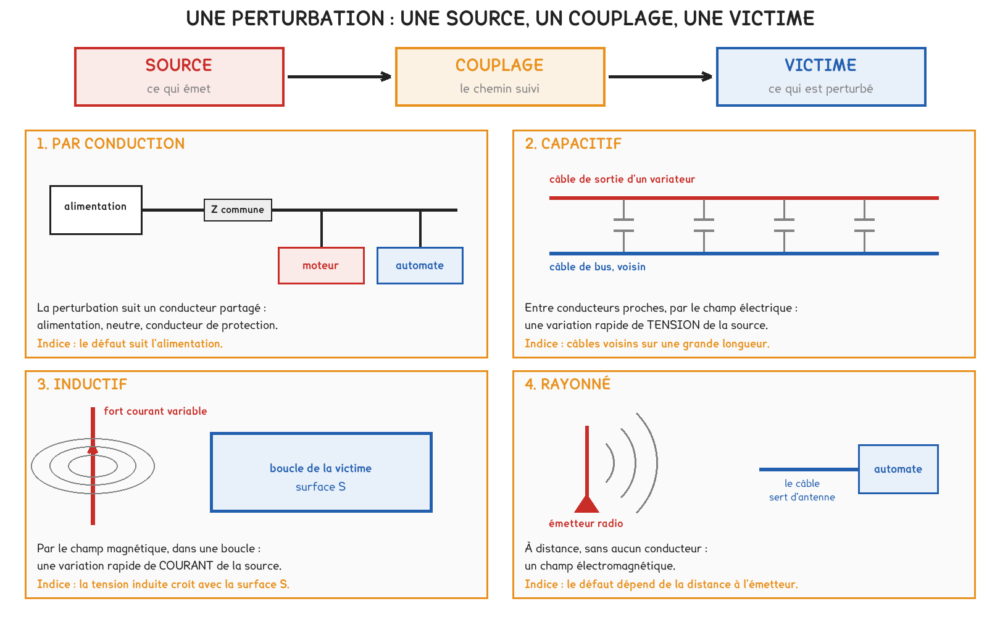
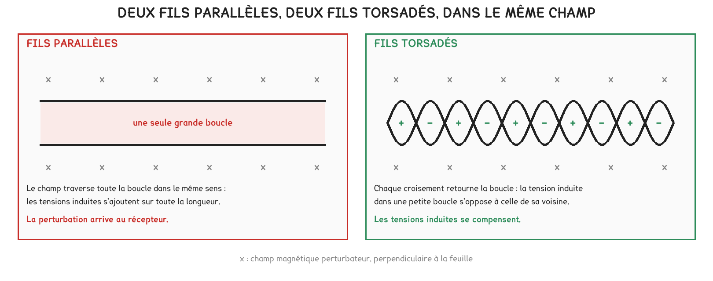
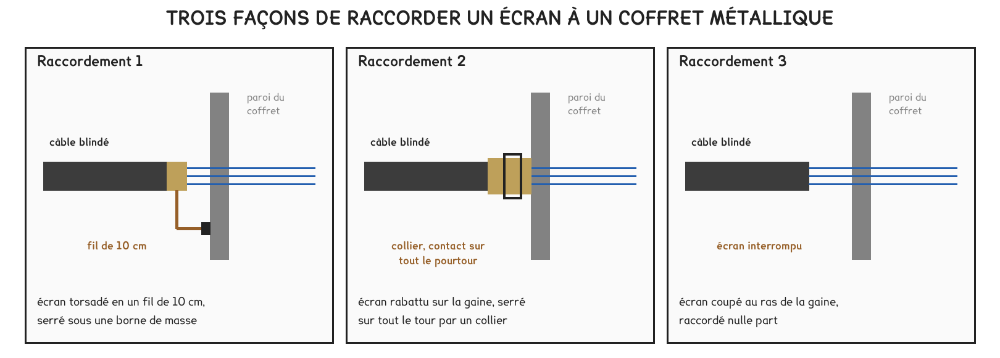
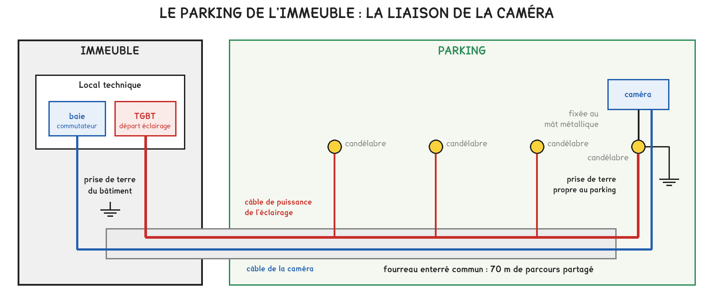
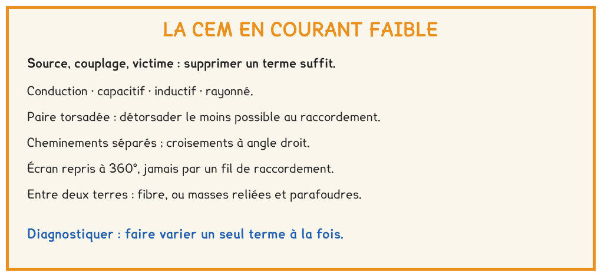

BTS FED option C · 1re année
Un équipement de courant faible qui se comporte mal a souvent sa cause ailleurs, dans un câble voisin ou une terre lointaine. La séance a appris à nommer la source, le couplage et la victime, puis à choisir la protection qui agit sur le bon terme.
6 questions · 4 exercices · 3 replis · 6 figures
Savoirs travaillés
La compatibilité électromagnétique, ou CEM, est l’aptitude d’un équipement à fonctionner correctement dans son environnement sans perturber ce qui l’entoure. Un bâtiment en est un environnement exigeant : moteurs, variateurs, éclairage, et parfois la foudre.
Toute perturbation suppose trois termes : une source, qui émet ; un couplage, par lequel la perturbation voyage ; une victime, dont le fonctionnement est dégradé. Supprimer un seul terme suffit.

| Mode | Par quoi | L’indice qui le trahit |
|---|---|---|
| Par conduction | un conducteur commun | le défaut suit l’alimentation |
| Capacitif | le champ électrique, entre câbles voisins | une grande longueur commune, une tension à fronts raides |
| Inductif | le champ magnétique, dans une boucle | une forte variation de courant, une grande boucle |
| Rayonné | un champ électromagnétique, à distance | le défaut suit la position de l’émetteur |
Changer la victime paraît souvent la solution la plus simple. Dans un bâtiment, pourtant, la source et la victime sont imposées par le programme : c’est presque toujours sur le couplage que porte la protection.
Pour aller plus loin
La tension induite dans une boucle est proportionnelle à la surface que le champ traverse. Deux câbles qui suivent deux trajets distincts forment une boucle de plusieurs mètres carrés ; reposés côte à côte, ils n’en forment plus qu’une de quelques centièmes de mètre carré.
C’est pour cette raison qu’un conducteur aller et son conducteur retour cheminent toujours ensemble, et qu’une paire se torsade.


Pour aller plus loin
Relié à ses deux extrémités, un écran protège bien contre les perturbations de haute fréquence. Il relie aussi les masses des deux extrémités : si elles ne sont pas au même potentiel, un courant à 50 Hz circule en permanence dans l’écran.
La réponse n’est pas de déconnecter un côté, ce qui fait perdre l’essentiel de la protection. Elle consiste à relier les masses entre elles par un réseau maillé, de façon qu’elles restent au même potentiel.

Le câble de la caméra partage 70 m de fourreau avec le câble de l’éclairage. Son écran est raccordé aux deux extrémités, et le mât est relié à une prise de terre distincte de celle de l’immeuble.
Deux prises de terre distinctes ne sont jamais au même potentiel. Un conducteur qui les relie, écran de câble ou conducteur de protection, forme une boucle de masse et devient le chemin des surtensions de foudre.
Entre deux bâtiments, ou vers un équipement extérieur doté de sa propre terre, la solution de référence est la fibre optique : elle ne conduit aucun courant. À défaut, les masses sont reliées et chaque extrémité reçoit un parafoudre, raccordé à la masse par un conducteur très court.
Pour aller plus loin
Une caméra reliée par fibre ne peut plus être alimentée par son câble. Il faut une alimentation locale, et elle doit être permanente : sur un mât d’éclairage commandé par une horloge, le circuit de l’éclairage ne convient pas.
Un diagnostic de CEM identifie successivement la source, le couplage et la victime. Chaque essai ne fait varier qu’un seul terme : allumer la source à volonté prouve la source ; déplacer le seul câble prouve le couplage.

Exercice · D2-1
Le câble d’un détecteur et son câble d’alimentation suivent deux trajets qui forment une boucle de 5 m sur 1,5 m. Après reprise, ils cheminent côte à côte à 1 cm l’un de l’autre sur les 5 m.
Par combien la tension induite est-elle divisée ?
Exercice · D2-1
Un câble de sonde de température chemine sur 30 m contre le câble de sortie d’un variateur de vitesse, dans le même chemin de câbles. La mesure devient instable lorsque le moteur tourne.
Quel est le mode de couplage principal ?
Exercice · D2-1
Pour supprimer une perturbation, un technicien fait passer le câble de bus dans un autre chemin de câbles.
Sur quel terme de la perturbation cette mesure agit-elle ?
Exercice · D2-1
Un courant permanent à 50 Hz circule dans l’écran d’une liaison entre deux bâtiments. Un collègue propose de déconnecter l’écran d’un côté. Répondre en trois ou quatre lignes.
La séance suivante traite le câblage VDI : catégories, classes et architecture. La diaphonie, rencontrée ici au raccordement d’une paire détorsadée, y devient une valeur mesurée et comparée à une limite.
Cette page rappelle la séance. Elle ne remplace pas le polycopié et ne donne aucun corrigé. Tous les calculs se font dans votre navigateur ; rien n'est enregistré.